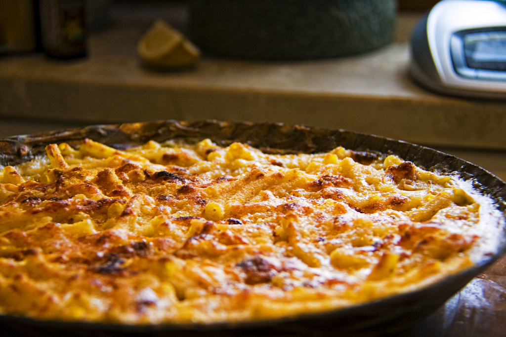

Mac and Cheese

My mom made this broccoli cheese casserole every Thanksgiving when I was little. We kids could never get enough!
If you have children or have some coming to visit you as guests this Thanksgiving, I guarantee that they will eat
(and enjoy) this veggie dish. It's also fabulous with a Christmas ham.
Ingredients
- Macaroni: This homemade mac and cheese starts with a box of uncooked macaroni noodles.
- Butter and Flour: You'll need butter and flour to make a roux for the cheese sauce. You'll also need two tablespoons of butter for the topping.
- Milk: Use whole milk for the richest flavor and texture.
- Cheese: This baked mac and cheese recipe calls for Cheddar and Parmesan cheeses.
- Seasonings Salt and pepper goes into the sauce, while paprika is sprinkled over the topping.
- Bread crumbs: Use store-bought dried bread crumbs or make your own at home.
Steps